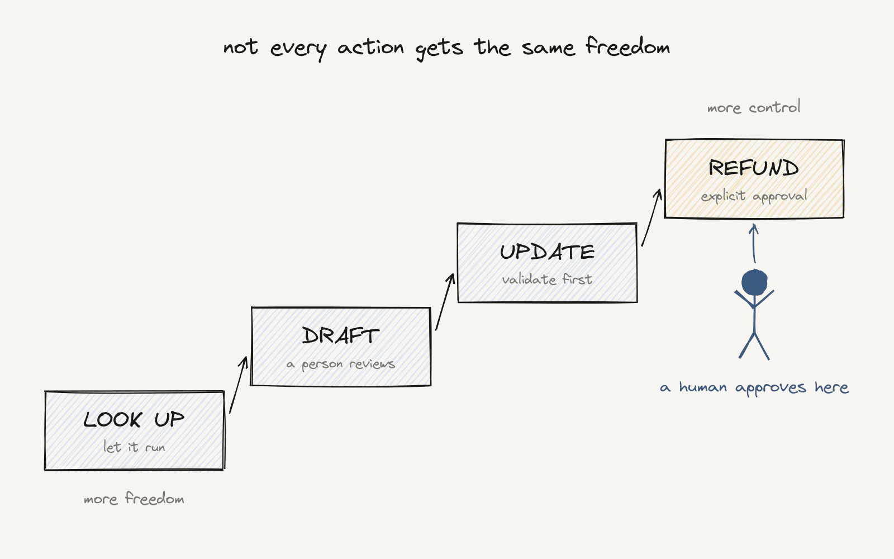

AI Agents That Know When Not to Act

AI that can act is powerful. AI that knows when not to act is ready for real business.
We're moving from AI that answers to AI that does. Agents can look things up, update records, start workflows and run multi-step processes.
That's a big opportunity. It's also a different level of responsibility.
An assistant that suggests escalating a case supports a decision. An agent that escalates the case changes the business. Those are not the same thing, and they shouldn't get the same freedom.
Not every action deserves the same freedom
- Looking up information: let it run.
- Drafting a reply to a customer: a person reviews.
- Updating a record: validate first.
- Issuing a refund or changing a contract: explicit approval.
The right level of freedom depends on four things: risk, business impact, whether you can undo it, and the rules you operate under.
That last one is no longer theoretical. Brazil, the EU and China are all writing "a human must be able to step in" into law, each in their own way.
Five rules I use
- Clear permissions. The AI touches only what it's allowed to touch.
- Clear boundaries. Every agent has a defined job and limits.
- Human control. People can review, approve, override or stop.
- Traceability. You can see what it did, why, and with what information.
- Recovery. When it goes wrong, you can fix the result and learn.
None of this is about slowing AI down. It's how you earn the trust to give AI more freedom over time. Teams that skip it don't move faster. They move fast once, break something, and then lock everything down.
I've spent years on platforms where customers add their own logic and automation. The lesson that keeps coming back: the companies that scale customization safely are the ones that decided early who can change what, and how to undo it. Agents are the same problem with higher stakes.
Freedom without accountability is a risk. Freedom with the right controls is a competitive advantage.
The first exercise I recommend is simple: list every action your AI can take, find the ones that can't be undone, and make sure a person owns each of them.